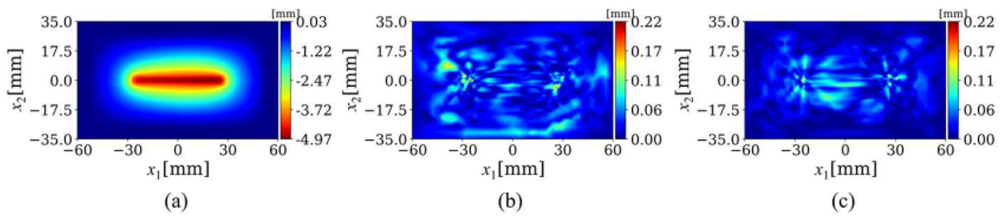

About
EDPOMP - Virtual Lab
Virtual_Lab@gmail.com
Thu Dau Mot University
Parameter
DeltaZ: 0.5
Time start: 500.33
Time stop: 500.33
In recent decades, incremental sheet forming (ISF), a die-less forming process, has been actively developed to manufacture parts requiring small-batch productions such as prototypes and complicated components. Consequently, we develop a feedforward neural network (FFNN) to predict the deformed shape subjected to an ISF process. This software aims to give students and researchers the most simple, and comprehensive scientific overview of the aforementioned phenomenon.
This section summarizes the numerical results of the proposed framework.
2.1 Data generation via a virtual test
Fig. 1 illustrates a schematic of the groove test performed by ISF. In this test, a rigid tool with a diameter of 10 ùëöùëö is programmed to move and form the blank sheet, which is claimed between the blank holder and die, into a straight groove. Within each forming step, the tool moves down in the vertical direction by an amount of Œîz following by a straight line on the horizontal surface, as shown in Fig. 1b.
Fig.1. Schematic of the groove test performed by the incremental sheet forming process.
2.2 Results and discussion
Fig. 2 indicates the FEM solution and the corresponding absolute error distribution of the surrogate model.
Fig.2. The points used to assess the prediction accuracy of the FFNN model.

Fig. 3 shows the deformed shape subjected to an ISF process in x-, y-, and z- direction.
Fig. 3. Temperature field predicted by the surrogate model.
(a) Deformed shape subjected to an ISF process in x- direction
(b) Deformed shape subjected to an ISF process in y- direction
(c) Deformed shape subjected to an ISF process in z- direction
[1] Quoc Tuan Pham, Hai Son Le, Anh Tuan Nguyen, Xiao Xiao, Young-Suk Kim, Van Dung Nguyen, Hoang Son Tran, Van Xuan Tran, A machine learning-based methodology for identification of the plastic flow in aluminum sheets during incremental sheet forming processes, The International Journal of Advanced Manufacturing Technology, 2022.
[2] Hai Son Le, Quoc Tuan Pham, Anh Tuan Nguyen, Hoang Son Tran, Xuan Van Tran, Prediction of Deformed Shape in Incremental Sheet Forming Process using Feedforward Neural Network, RICE 2022
This work was funded by Vingroup and supported by Vingroup Innovation Foundation (VINIF) under project code VINIF.2020.DA15.